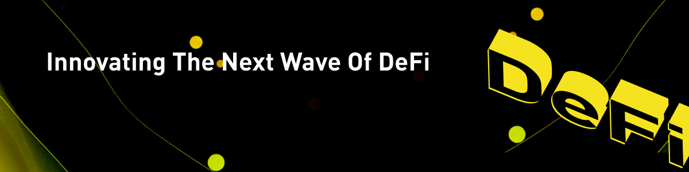
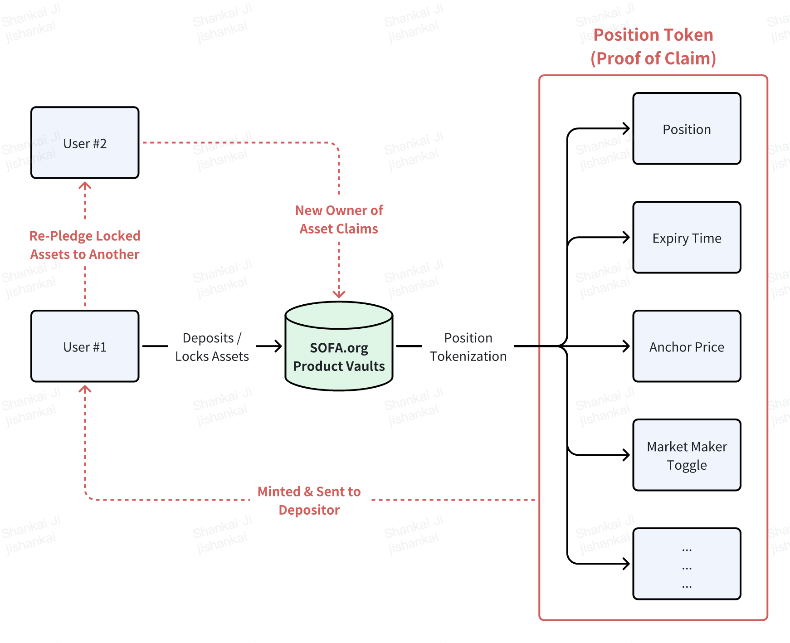

創新下一波 DeFi
交易對手違約提醒了去中心化的重要性
2022 年對加密貨幣來說是一個嚴峻的現實檢驗，Genesis、Celsius、3AC 和 FTX 的倒閉震驚了我們生態系統的核心，提醒我們去中心化的重要性，這在我們追求利潤的過程中許多人已經忘記了。傳統金融在雷曼兄弟倒閉時經歷了類似的清算，當時一連串（過度負債的）交易對手失敗幾乎拖垮了全球金融系統。
因此，後金融危機時代立法使用集中清算所和三方清算安排，有效地將資產託管風險隔離並集中到資金充足（且高度監管）的第三方實體中。監管機構認為，在集中接觸點內管理抵押品風險更安全、更高效，並防止不良中介在資產負債管理上玩“快進快出”的遊戲。
快進到今天，想像一下，如果世界上有一種廣泛可用的技術解決方案，提供不可變的數據記錄、可追溯的交易、可定義的參數、運營透明度和卓越的網絡安全性；這樣的技術肯定會提供全球結算存儲庫的理想解決方案，不是嗎？
重燃“無信任”精神作為區塊鏈的核心價值
去中心化。透明度。不可變性。可擴展性。真實性。這些是人們常提到的區塊鏈提供的主要優勢。然而，我們認為“無信任”最能體現加密貨幣的核心價值，因為區塊鏈使完全陌生的人能夠在不依賴任意中間人或特權群體的情況下執行有效交易。
此外，智能合約的不可變性使人們可以將絕對的信任放在代碼上，而不是交易對手的善意。因此，無信任的基礎建立在 1) 合約不可變性和 2) 鏈上資產結算這兩個不可妥協的支柱上。這些核心原則將成為我們開發真正擺脫中心化束縛的協議的推動力。
然而，我們要明確的是，去中心化精神應該是促進用戶訪問和參與，而不是以某種極端的金融無政府主義形式免除責任。雖然區塊鏈執行可以是匿名的，但通常在交易的另一端仍然是一個社會人類，我們應該以尊重的態度對待。
集體 SOFA 協議的開發是我們促進無信任去中心化精神的嘗試，但同樣重要的是，我們要建立一套“最佳實踐”指南，以維護專業責任，即使它們是自我施加或自我監管的。我們協議設計的每一部分，包括合約透明度、保險庫分類和公平啟動的代幣經濟學，展示了我們建立更負責任的 DeFi 的決心和承諾。通過以身作則，我們希望向世界展示一種更好的前進方式，而無信任去中心化是未來的關鍵基石。
風險代幣化
從本質上講，金融工具最終不過是針對某些支付和所有權要求的交易對手的貨幣合約。它們受各種人為（和集中）層次的監管約束，並通過實體和電子文件合法記錄。不出所料，我們可以用“數字”和“區塊鏈賬本”替代很多前述詞語，而不失其意義的本質。
加密貨幣在鏈上安全性、“代碼即法律”智能合約框架、可轉讓數字貨幣和實物資產代幣化方面取得了巨大進展。我們正在通過創新的產品保險庫將最後一部分更進一步，我們不僅記錄名義金額，還將其他重要的工具參數轉錄到鏈上，以便它們可以在我們稱之為風險代幣化的過程中被真實地複製和引用。生成的輸出將包含在稱為“位置代幣”的東西中，可以被視為鏈鎖資產的所有權要求，但可以像標準 ERC-20 代幣一樣在用戶之間自由轉讓。

以使用為驅動的獎勵的可持續代幣經濟模型
看，金錢讓世界運轉，而自我利益最大化作為穩定均衡結果是 DeFi 背後的核心驅動力。然而，在過去的周期中，我們看到一些（非常）高調的曾經有前途的項目由於代幣經濟學構建不良而失敗。無論是由於內部人士和風投的退出流動性拋售、花招式的通脹實驗、價格反射性需求模型，還是過度關注短期收益，仍有很多工作要做以促進更可持續的貨幣模型。
作為回應，SOFA.org 將部署一個 100% 公平啟動的代幣經濟模型，具有固定供應的通縮效用代幣，只能通過協議使用來獲得。此外，所有協議收益將用於每日代幣銷毀操作，確保所有利潤直接回收到我們的核心用戶和持有者的口袋中。從長遠來看，代幣價格應該是我們的協議為生態系統貢獻了多少（結算）價值的基本表現。有人想“交易賺取”嗎？
去中心化清算作為新的結算基礎
從過去的周期中獲得的智慧，我們正在直接解決 DeFi 的一些結構性缺陷，同時迭代其關鍵創新。具體來說，創建 SOFA.org 的去中心化清算保險庫是我們雄心勃勃的嘗試，旨在建立金融資產如何在鏈上原子結算的標準，同時通過可轉讓的位置代幣催化 DeFi 資本流動性。
通過將相關的工具細節直接記錄在智能合約上，我們不僅可以在鏈上結算這些資產，協議還可以鑄造匹配的位置代幣作為明確的數字索賠證明。此外，這些位置代幣可以作為安全抵押品抵押給其他 DeFi 協議，甚至是 CeFi 平台，大大提高整個生態系統的資本速度。最後，通過將我們精心設計的 DeFi 保險庫作為區塊鏈上的安全、透明和“中立”的結算選項，我們消除了加密中介的資產託管問題，為用戶提供了完全的安心，專注於資本回報而不是資本回報。 ```